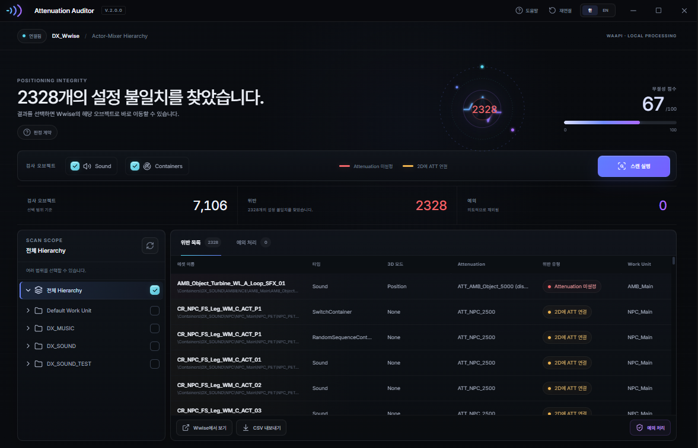

포지셔닝과 감쇠 설정이
어긋난 사운드를 찾는다
3D로 놓고 감쇠를 안 걸었거나, 2D인데 감쇠가 남아 있는 오브젝트는 소리가 이상해질 때까지 잘 드러나지 않습니다. 계층 전체를 한 번에 훑어 그 두 가지만 뽑아냅니다. 프로젝트는 읽기만 합니다.

대규모 프로젝트에서 설정의 일관성을 지킨다
포지셔닝과 어테뉴에이션은 오브젝트마다 따로 설정되기 때문에, 프로젝트가 커지면 설정이 조금씩 어긋납니다. 이 툴은 계층 전체를 한 번에 훑어 두 설정이 서로 모순되는 오브젝트만 뽑아 보여줍니다.
읽기 전용
프로젝트를 수정하지 않습니다. 수정은 Wwise에서 직접 판단합니다.
상속을 따라간다
로컬 값이 아니라 실제 적용값으로 판정합니다. Wwise가 런타임에 쓰는 값과 같습니다.
예외는 지속된다
의도된 설정은 바뀔 때까지 조용히 있고, 바뀌면 스스로 다시 올라옵니다.
한눈에 보는 기능
이 툴이 하는 일 아홉 가지입니다. 각각은 아래에서 더 자세히 풀어 두었습니다.
3D인데 감쇠 없음
공간에는 놓였지만 거리로 줄지 않아, 어디서든 풀볼륨으로 들립니다.
2D인데 감쇠 있음
화면에 고정되어야 하는데 ShareSet이 걸려 있어 거리에 따라 줄어듭니다.
네 항목, 두 그룹
Listener Relative Routing에서 둘, Attenuation에서 둘을 읽어 두 그룹을 한 번 비교합니다.
계층을 거슬러 올라간다
Override Positioning이 켜진 가장 가까운 조상을 찾아 그 노드의 값으로 판정합니다.
가지만 훑기
계층에서 노드를 골라 범위를 좁히거나, 선택을 비워 전체를 훑습니다.
오브젝트 타입 필터
Sound · ActorMixer · RandomSequence · Blend · Switch 컨테이너를 각각 켜고 끕니다.
행에 적용값이 함께
각 행에 판정 근거가 된 적용값이 들어 있어, Wwise를 열지 않고도 판단할 수 있습니다.
더블클릭으로 Wwise
행을 더블클릭하면 Wwise Project Explorer에서 그 오브젝트가 선택됩니다.
CSV 내보내기
UTF-8 BOM으로 내보내 Excel에서 바로 열립니다.
네 개의 설정, 두 개의 그룹,
하나의 비교
Listener Relative Routing에서 Enable과 3D Spatialization을, Attenuation에서 Enable과 ShareSet 연결 여부를 읽습니다. 두 그룹으로 묶어 비교해서 서로 맞으면 정상, 어긋나면 위반입니다.
위치도 잡히고 감쇠도 걸려 있음 — 의도대로 동작합니다.
3D인데 감쇠가 없음 — 거리와 무관하게 풀볼륨으로 들립니다.
2D인데 감쇠가 걸림 — 고정되어야 할 소리가 거리에 따라 줄어듭니다.
위치도 감쇠도 없음 — 의도대로 동작합니다.
| # | ① LRR Enable | ② 3D Spatialization | ③ ATT Enable | ④ ATT ShareSet | 판정 |
|---|---|---|---|---|---|
| 1 | ON | Position(+Ori) | ON | 설정 | 정상 |
| 2 | ON | Position(+Ori) | ON | 없음 | 위반 |
| 3 | ON | Position(+Ori) | OFF | 설정 | 위반 |
| 4 | ON | Position(+Ori) | OFF | 없음 | 위반 |
| 5 | ON | None | ON | 설정 | 위반 |
| 6 | ON | None | ON | 없음 | 정상 |
| 7 | ON | None | OFF | 설정 | 정상 |
| 8 | ON | None | OFF | 없음 | 정상 |
| 9 | OFF | Position(+Ori) | ON | 설정 | 위반 |
| 10 | OFF | Position(+Ori) | ON | 없음 | 정상 |
| 11 | OFF | Position(+Ori) | OFF | 설정 | 정상 |
| 12 | OFF | Position(+Ori) | OFF | 없음 | 정상 |
| 13 | OFF | None | ON | 설정 | 위반 |
| 14 | OFF | None | ON | 없음 | 정상 |
| 15 | OFF | None | OFF | 설정 | 정상 |
| 16 | OFF | None | OFF | 없음 | 정상 |
5~8이 2D로 분류되는 이유. 3D Spatialization이 None이면 LRR Enable이 켜져 있어도 거리 감쇠가 적용되지 않습니다. 7 · 11 · 15가 정상인 이유. Attenuation Enable이 꺼져 있으면 ShareSet이 연결돼 있어도 런타임에는 적용되지 않아 ATT 비활성으로 셉니다.

상속 · 결과 · 예외
Wwise가 해석하는 방식대로
오브젝트에 적힌 값이 실제로 적용되는 값과 다를 수 있습니다. 대상에서 시작해 Override Positioning이 켜진 조상을 만날 때까지 올라가 그 노드에서 네 항목을 읽습니다. 조상까지 올라가도 override가 없으면 기본 2D · 무 ATT로 간주하고 보고하지 않고 건너뜁니다. ShareSet 참조가 {00000000-…} 형태면 미설정으로 처리합니다.

일곱 컬럼
이름, 타입, 적용된 3D Spatialization, Attenuation ShareSet(Enable이 꺼져 있으면 disabled 표시), 위반 종류, Work Unit, Wwise 내 전체 경로.
목록 다루기
헤더를 클릭해 정렬하고, 드래그해 컬럼 순서를 바꾸고, 여러 행을 골라 한꺼번에 처리합니다.
예외는 설정 하나를 승인한 것
어긋난 설정이 의도된 것일 때가 있습니다. 예외로 등록하면 목록에서 빠지고, 툴 옆 att_auditor_exceptions.json 에 오브젝트 경로와 spatialization · attenuation · 위반 종류 스냅샷이 저장됩니다. 스캔마다 그 스냅샷과 비교해 셋 중 하나라도 달라지면 예외가 스스로 풀리고 행이 돌아옵니다. 승인한 것은 그 설정이지, 오브젝트의 영구 면제가 아니기 때문입니다.

- 01
등록
행을 골라 하나 또는 여럿을 예외로 추가합니다.
- 02
저장
att_auditor_exceptions.json에 보관됩니다. - 03
스캔마다 재확인
스캔할 때마다 저장된 spatialization · attenuation · 위반 종류를 비교합니다.
- 04
자동 해제
셋 중 하나라도 달라지면 예외가 풀리고 행이 돌아옵니다.